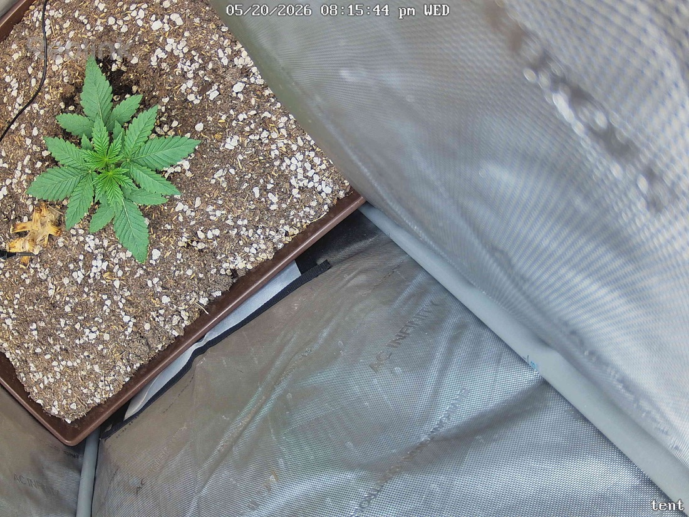

← All reports
May 20, 2026
Wed May 20, 2026 — 8:15 PM

Prognosis
Daily check-in — Papaya Crush, day ~22 from germ
- Change between snapshots: Effectively none — the two frames are ~73 seconds apart, so this is a same-moment comparison rather than a true day-over-day delta. Posture, leaf count, and color are identical.
- Structure: Multi-node bushy seedling, ~4 stacked sets of serrated true leaves, tight internodes, no stretch. Stem looks sturdy and centered in the pot.
- Color & leaf health: Uniform mid-deep green, leaves flat and outstretched (slight prayer/upward tilt on the top set — a happy-light signal, not tacoing). No yellowing, edge burn, interveinal chlorosis, or bleaching.
- Stress signs: None visible. No clawing, no drooping, no spots/webbing/pests. The dried brown leaf near the lower-left is fallen debris on the soil surface — per your no-till protocol it stays.
- Soil surface: Plenty of perlite visible, surface looks dry-to-touch dry — fine for this size plant, just keep an eye on watering cadence since the top inch dries fast under 400 PPFD.
- Phase check: Germ April 28 → today May 20 = ~3 weeks old, ~2 weeks in tent. You'd expect 3–5 true-leaf nodes, stocky stature, no flowering signals on a photoperiod under long-day light. That's exactly what you have. On track.
- Light: 400 PPFD looks well-tolerated — no taco, no bleach at the apex. Room to hold here for several more days before the next bump.
Suggested next actions: no action needed. Hold PPFD at 400, normal watering, and re-snap tomorrow for a meaningful day-over-day comparison.
Overall: Healthy, on-pace early-veg seedling — boring in the best way.